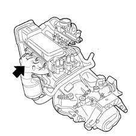
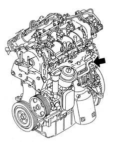

ENGINE MARKING POSITION
- Path
- Technical Data > General information > IDENTIFICATION PLATES > ENGINE MARKING POSITION
- Kind
- technical data / specifications
- Applies to
- all engines; all production periods
- Interactive page
- https://sloeber94.github.io/elrnDB-fPnd/en/#/2751157
Applies to: all engines; all production periods
1.1 8v - 1.2 8v engines
The engine marking is stamped on the cylinder block/crankcase, timing side, near the exhaust manifold mounting.

1.3 Multijet Engine
The engine marking is stamped on the cylinder block/crankcase, gearbox side.
